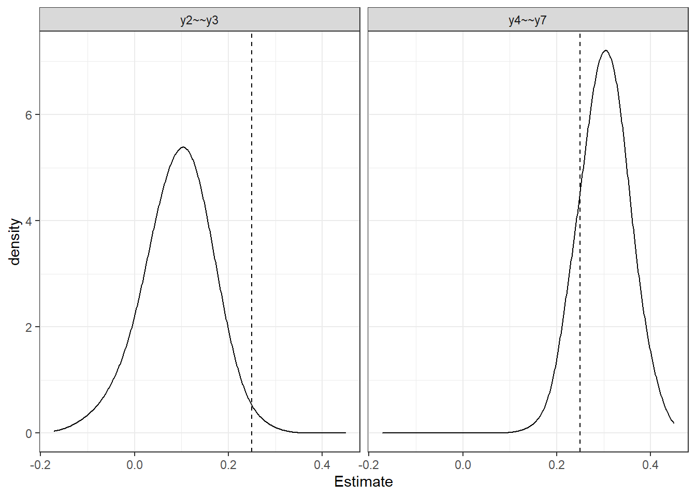
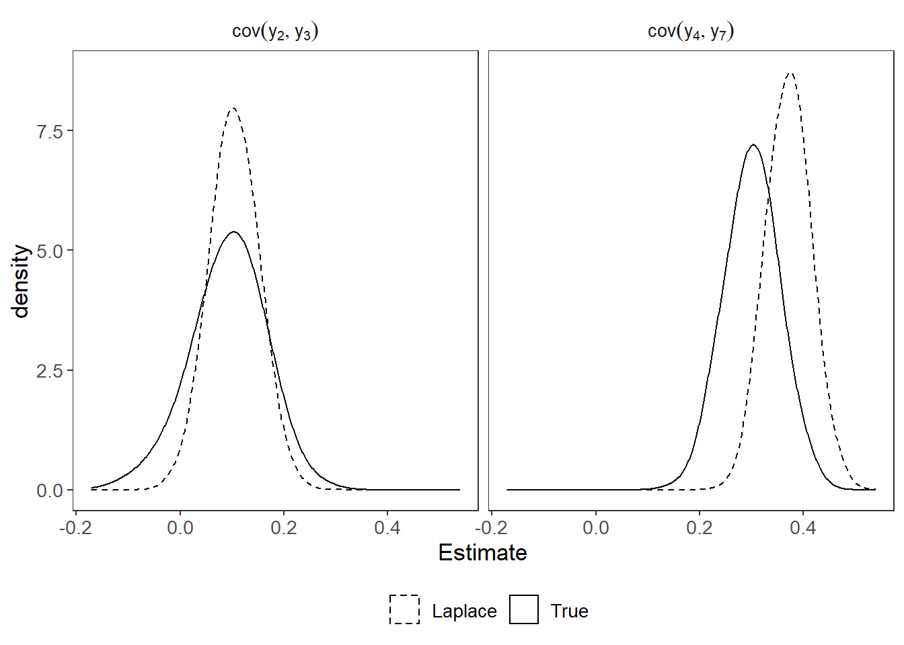

Last updated: 2020-11-14
Checks: 6 1
Knit directory: laplace-local-fit/
This reproducible R Markdown analysis was created with workflowr (version 1.6.2). The Checks tab describes the reproducibility checks that were applied when the results were created. The Past versions tab lists the development history.
The R Markdown file has unstaged changes. To know which version of the R Markdown file created these results, you’ll want to first commit it to the Git repo. If you’re still working on the analysis, you can ignore this warning. When you’re finished, you can run wflow_publish to commit the R Markdown file and build the HTML.
Great job! The global environment was empty. Objects defined in the global environment can affect the analysis in your R Markdown file in unknown ways. For reproduciblity it’s best to always run the code in an empty environment.
The command set.seed(20200217) was run prior to running the code in the R Markdown file. Setting a seed ensures that any results that rely on randomness, e.g. subsampling or permutations, are reproducible.
Great job! Recording the operating system, R version, and package versions is critical for reproducibility.
Nice! There were no cached chunks for this analysis, so you can be confident that you successfully produced the results during this run.
Great job! Using relative paths to the files within your workflowr project makes it easier to run your code on other machines.
Great! You are using Git for version control. Tracking code development and connecting the code version to the results is critical for reproducibility.
The results in this page were generated with repository version 79d81aa. See the Past versions tab to see a history of the changes made to the R Markdown and HTML files.
Note that you need to be careful to ensure that all relevant files for the analysis have been committed to Git prior to generating the results (you can use wflow_publish or wflow_git_commit). workflowr only checks the R Markdown file, but you know if there are other scripts or data files that it depends on. Below is the status of the Git repository when the results were generated:
Ignored files:
Ignored: .Rhistory
Ignored: .Rproj.user/
Ignored: manuscript2/fig/
Untracked files:
Untracked: sera-2021/R Noah SERA 2021 Acceptance Letter (002).docx
Unstaged changes:
Modified: analysis/simulation_study.Rmd
Modified: manuscript/fig/sampling_dist.pdf
Modified: manuscript/laplace_local_fit.aux
Modified: manuscript/laplace_local_fit.bbl
Modified: manuscript/laplace_local_fit.bcf
Modified: manuscript/laplace_local_fit.blg
Modified: manuscript/laplace_local_fit.log
Modified: manuscript/laplace_local_fit.pdf
Modified: manuscript/laplace_local_fit.synctex.gz
Modified: manuscript/laplace_local_fit.tex
Modified: manuscript/references.bib
Deleted: manuscript/~$place_local_fit_2020_10_25.docx
Note that any generated files, e.g. HTML, png, CSS, etc., are not included in this status report because it is ok for generated content to have uncommitted changes.
These are the previous versions of the repository in which changes were made to the R Markdown (analysis/simulation_study.Rmd) and HTML (docs/simulation_study.html) files. If you’ve configured a remote Git repository (see ?wflow_git_remote), click on the hyperlinks in the table below to view the files as they were in that past version.
| File | Version | Author | Date | Message |
|---|---|---|---|---|
| Rmd | f54bc3f | noah-padgett | 2020-10-23 | updated simulation |
| html | f54bc3f | noah-padgett | 2020-10-23 | updated simulation |
| Rmd | 40d9a1e | noah-padgett | 2020-10-15 | updated publication figure |
lambda <- matrix(
c(rep(0.8,4), rep(0,4), rep(0,4),
rep(0,4), rep(0.8,4), rep(0,4),
rep(0,4), rep(0,4), rep(0.8,4)),
ncol=3
)
phi <- matrix(
c(1, 0.3, 0.1,
0.3, 1, 0.2,
0.1, 0.2, 1),
ncol=3
)
psi <- diag(1, ncol=12, nrow=12)
psi[2, 3] <- psi[3, 2] <- 0.25
psi[4, 7] <- psi[7, 4] <- 0.3
sigma <- lambda%*%phi%*%t(lambda) + psi
sigma [,1] [,2] [,3] [,4] [,5] [,6] [,7] [,8] [,9] [,10] [,11] [,12]
[1,] 1.640 0.640 0.640 0.640 0.192 0.192 0.192 0.192 0.064 0.064 0.064 0.064
[2,] 0.640 1.640 0.890 0.640 0.192 0.192 0.192 0.192 0.064 0.064 0.064 0.064
[3,] 0.640 0.890 1.640 0.640 0.192 0.192 0.192 0.192 0.064 0.064 0.064 0.064
[4,] 0.640 0.640 0.640 1.640 0.192 0.192 0.492 0.192 0.064 0.064 0.064 0.064
[5,] 0.192 0.192 0.192 0.192 1.640 0.640 0.640 0.640 0.128 0.128 0.128 0.128
[6,] 0.192 0.192 0.192 0.192 0.640 1.640 0.640 0.640 0.128 0.128 0.128 0.128
[7,] 0.192 0.192 0.192 0.492 0.640 0.640 1.640 0.640 0.128 0.128 0.128 0.128
[8,] 0.192 0.192 0.192 0.192 0.640 0.640 0.640 1.640 0.128 0.128 0.128 0.128
[9,] 0.064 0.064 0.064 0.064 0.128 0.128 0.128 0.128 1.640 0.640 0.640 0.640
[10,] 0.064 0.064 0.064 0.064 0.128 0.128 0.128 0.128 0.640 1.640 0.640 0.640
[11,] 0.064 0.064 0.064 0.064 0.128 0.128 0.128 0.128 0.640 0.640 1.640 0.640
[12,] 0.064 0.064 0.064 0.064 0.128 0.128 0.128 0.128 0.640 0.640 0.640 1.640psi_m <- diag(1, ncol=12, nrow=12)
sigma_m <- lambda%*%phi%*%t(lambda) + psi_m
sigma_m - sigma [,1] [,2] [,3] [,4] [,5] [,6] [,7] [,8] [,9] [,10] [,11] [,12]
[1,] 0 0.00 0.00 0.0 0 0 0.0 0 0 0 0 0
[2,] 0 0.00 -0.25 0.0 0 0 0.0 0 0 0 0 0
[3,] 0 -0.25 0.00 0.0 0 0 0.0 0 0 0 0 0
[4,] 0 0.00 0.00 0.0 0 0 -0.3 0 0 0 0 0
[5,] 0 0.00 0.00 0.0 0 0 0.0 0 0 0 0 0
[6,] 0 0.00 0.00 0.0 0 0 0.0 0 0 0 0 0
[7,] 0 0.00 0.00 -0.3 0 0 0.0 0 0 0 0 0
[8,] 0 0.00 0.00 0.0 0 0 0.0 0 0 0 0 0
[9,] 0 0.00 0.00 0.0 0 0 0.0 0 0 0 0 0
[10,] 0 0.00 0.00 0.0 0 0 0.0 0 0 0 0 0
[11,] 0 0.00 0.00 0.0 0 0 0.0 0 0 0 0 0
[12,] 0 0.00 0.00 0.0 0 0 0.0 0 0 0 0 0# specify population model
population.model <- '
f1 =~ 0.8*y1 + 0.8*y2 + 0.8*y3 + 0.8*y4
f2 =~ 0.8*y5 + 0.8*y6 + 0.8*y7 + 0.8*y8
f3 =~ 0.8*y9 + 0.8*y10 + 0.8*y11 + 0.8*y12
# Factor (co)variances
f1 ~~ 1*f1 + 0.3*f2 + 0.1*f3
f2 ~~ 1*f2 + 0.2*f3
f3 ~~ 1*f3
# residual covariances
y2 ~~ 0.1*y3
y4 ~~ 0.3*y7
'
# analysis model
analysis.model1 <- '
f1 =~ NA*y1 + y2 + y3 + y4
f2 =~ NA*y5 + y6 + y7 + y8
f3 =~ NA*y9 + y10 + y11 + y12
# Factor covariances
f1 ~~ 1*f1 + f2 + f3
f2 ~~ 1*f2 + f3
f3 ~~ 1*f3
# residual covariances
y2 ~~ y3
y4 ~~ y7
'
Output <- sim(nrep, model=analysis.model1,silent = T,
n=500, generate=population.model,
lavaanfun = "cfa")
sim.res[,1:2] <- Output@stdCoef[, c("y2~~y3", "y4~~y7")]
colnames(sim.res) <- c("y2~~y3", "y4~~y7")
plot_dat <- sim.res %>%
pivot_longer(
cols=everything(),
names_to = "Parameter",
values_to = "Estimate"
) %>%
mutate(V = ifelse(Parameter %like% "=~", 0.30, 0.25))
p <- ggplot(plot_dat, aes(x=Estimate))+
geom_density(adjust = 2)+
geom_vline(aes(xintercept = V), linetype="dashed")+
#geom_vline(aes(xintercept = -V), linetype="dashed")+
facet_wrap(.~Parameter)+
theme_bw()
p
mean(sim.res[,1] > 0.25)[1] 0.01mean(sim.res[,2] > 0.25)[1] 0.83wd <- getwd()
source(paste0(wd, "/code/utility_functions.R"))
|
| | 0%source(paste0(wd, "/code/laplace_functions.R"))
# specify population model
population.model <- '
f1 =~ 0.8*y1 + 0.8*y2 + 0.8*y3 + 0.8*y4
f2 =~ 0.8*y5 + 0.8*y6 + 0.8*y7 + 0.8*y8
f3 =~ 0.8*y9 + 0.8*y10 + 0.8*y11 + 0.8*y12
# Factor (co)variances
f1 ~~ 1*f1 + 0.3*f2 + 0.1*f3
f2 ~~ 1*f2 + 0.2*f3
f3 ~~ 1*f3
# residual covariances
y4 ~~ 0.3*y7
y2 ~~ 0.1*y3
'
# generate data
myData <- simulateData(population.model, sample.nobs=500L)
# fit model
myModel <- '
f1 =~ y1 + y2 + y3 + y4
f2 =~ y5 + y6 + y7 + y8
f3 =~ y9 + y10 + y11 + y12
# Factor covariances
f1 ~~ f2 + f3
f2 ~~ f3
'
fit <- cfa(myModel, data=myData)
summary(fit, standardized=T)lavaan 0.6-7 ended normally after 37 iterations
Estimator ML
Optimization method NLMINB
Number of free parameters 27
Number of observations 500
Model Test User Model:
Test statistic 124.338
Degrees of freedom 51
P-value (Chi-square) 0.000
Parameter Estimates:
Standard errors Standard
Information Expected
Information saturated (h1) model Structured
Latent Variables:
Estimate Std.Err z-value P(>|z|) Std.lv Std.all
f1 =~
y1 1.000 0.829 0.626
y2 0.915 0.096 9.512 0.000 0.758 0.620
y3 0.928 0.099 9.384 0.000 0.769 0.604
y4 0.961 0.101 9.469 0.000 0.796 0.615
f2 =~
y5 1.000 0.723 0.600
y6 1.134 0.119 9.563 0.000 0.820 0.655
y7 0.988 0.113 8.715 0.000 0.715 0.550
y8 1.091 0.115 9.460 0.000 0.789 0.638
f3 =~
y9 1.000 0.773 0.605
y10 1.000 0.112 8.896 0.000 0.773 0.604
y11 0.982 0.108 9.053 0.000 0.758 0.631
y12 0.932 0.106 8.751 0.000 0.720 0.584
Covariances:
Estimate Std.Err z-value P(>|z|) Std.lv Std.all
f1 ~~
f2 0.253 0.046 5.507 0.000 0.422 0.422
f3 0.047 0.041 1.155 0.248 0.074 0.074
f2 ~~
f3 0.132 0.038 3.451 0.001 0.236 0.236
Variances:
Estimate Std.Err z-value P(>|z|) Std.lv Std.all
.y1 1.064 0.091 11.728 0.000 1.064 0.608
.y2 0.920 0.078 11.860 0.000 0.920 0.615
.y3 1.030 0.085 12.184 0.000 1.030 0.635
.y4 1.044 0.087 11.974 0.000 1.044 0.622
.y5 0.930 0.076 12.290 0.000 0.930 0.640
.y6 0.894 0.081 11.076 0.000 0.894 0.571
.y7 1.178 0.090 13.118 0.000 1.178 0.697
.y8 0.908 0.079 11.502 0.000 0.908 0.594
.y9 1.034 0.088 11.793 0.000 1.034 0.634
.y10 1.039 0.088 11.814 0.000 1.039 0.635
.y11 0.869 0.078 11.195 0.000 0.869 0.602
.y12 1.001 0.082 12.222 0.000 1.001 0.659
f1 0.687 0.107 6.421 0.000 1.000 1.000
f2 0.523 0.085 6.142 0.000 1.000 1.000
f3 0.597 0.099 6.039 0.000 1.000 1.000lfit <- laplace_local_fit(
fit, data=myData, cut.load = 0.30, cut.cov = 0.25,
standardize = T, pb = F,
opt=list(scale.cov=1, no.samples=10000))library(kableExtra)
kable(lfit$Summary, format="html", digits=3) %>%
kable_styling(full_width = T) %>%
scroll_box(width="100%", height = "500px")| Parameter | Pr(|theta|>cutoff) | mean | sd | p0.025 | p0.25 | p0.5 | p0.75 | p0.975 |
|---|---|---|---|---|---|---|---|---|
| y7~~y4 | 0.998 | 0.372 | 0.043 | 0.289 | 0.342 | 0.372 | 0.401 | 0.458 |
| f1=~y7 | 0.014 | 0.158 | 0.064 | 0.033 | 0.114 | 0.158 | 0.201 | 0.285 |
| y5~~y1 | 0.012 | 0.133 | 0.052 | 0.031 | 0.099 | 0.133 | 0.168 | 0.235 |
| y11~~y4 | 0.009 | -0.125 | 0.054 | -0.229 | -0.162 | -0.125 | -0.088 | -0.019 |
| f1=~y6 | 0.005 | -0.136 | 0.063 | -0.259 | -0.177 | -0.136 | -0.094 | -0.010 |
| y9~~y7 | 0.004 | 0.118 | 0.051 | 0.019 | 0.084 | 0.118 | 0.152 | 0.217 |
| y7~~y6 | 0.003 | -0.098 | 0.056 | -0.207 | -0.136 | -0.099 | -0.060 | 0.012 |
| f3=~y4 | 0.003 | -0.117 | 0.067 | -0.246 | -0.162 | -0.117 | -0.072 | 0.015 |
| f2=~y9 | 0.003 | 0.117 | 0.067 | -0.015 | 0.071 | 0.117 | 0.163 | 0.249 |
| y12~~y6 | 0.003 | 0.102 | 0.054 | -0.002 | 0.066 | 0.102 | 0.138 | 0.208 |
| y5~~y4 | 0.003 | -0.098 | 0.053 | -0.203 | -0.134 | -0.098 | -0.062 | 0.004 |
| y4~~y3 | 0.003 | -0.097 | 0.056 | -0.206 | -0.135 | -0.097 | -0.059 | 0.016 |
| y12~~y3 | 0.003 | 0.105 | 0.052 | 0.004 | 0.071 | 0.105 | 0.141 | 0.209 |
| y12~~y8 | 0.003 | -0.104 | 0.053 | -0.208 | -0.140 | -0.104 | -0.068 | 0.001 |
| f2=~y4 | 0.002 | 0.105 | 0.068 | -0.028 | 0.060 | 0.105 | 0.151 | 0.240 |
| y6~~y4 | 0.002 | -0.093 | 0.055 | -0.201 | -0.130 | -0.092 | -0.057 | 0.015 |
| y2~~y1 | 0.002 | -0.091 | 0.056 | -0.200 | -0.129 | -0.091 | -0.053 | 0.021 |
| f2=~y3 | 0.001 | -0.102 | 0.067 | -0.235 | -0.148 | -0.103 | -0.056 | 0.030 |
| f3=~y3 | 0.001 | 0.097 | 0.067 | -0.035 | 0.052 | 0.097 | 0.142 | 0.228 |
| y3~~y2 | 0.001 | 0.105 | 0.048 | 0.011 | 0.072 | 0.104 | 0.137 | 0.199 |
| y11~~y7 | 0.001 | -0.082 | 0.053 | -0.185 | -0.117 | -0.082 | -0.045 | 0.021 |
| y7~~y2 | 0.001 | -0.087 | 0.053 | -0.191 | -0.122 | -0.087 | -0.052 | 0.017 |
| y8~~y5 | 0.001 | -0.079 | 0.055 | -0.186 | -0.117 | -0.079 | -0.042 | 0.031 |
| f1=~y11 | 0.001 | -0.108 | 0.062 | -0.231 | -0.150 | -0.108 | -0.066 | 0.015 |
| f2=~y1 | 0.001 | 0.081 | 0.068 | -0.052 | 0.035 | 0.080 | 0.128 | 0.215 |
| f2=~y2 | 0.000 | -0.090 | 0.066 | -0.219 | -0.134 | -0.090 | -0.045 | 0.039 |
| y7~~y3 | 0.000 | -0.079 | 0.052 | -0.182 | -0.115 | -0.079 | -0.044 | 0.020 |
| f1=~y9 | 0.000 | 0.079 | 0.064 | -0.049 | 0.036 | 0.079 | 0.122 | 0.204 |
| f3=~y6 | 0.000 | 0.085 | 0.066 | -0.046 | 0.041 | 0.085 | 0.130 | 0.214 |
| y9~~y6 | 0.000 | -0.046 | 0.055 | -0.154 | -0.083 | -0.045 | -0.008 | 0.064 |
| y10~~y3 | 0.000 | -0.064 | 0.053 | -0.169 | -0.100 | -0.064 | -0.028 | 0.040 |
| f3=~y1 | 0.000 | 0.057 | 0.068 | -0.076 | 0.012 | 0.057 | 0.103 | 0.191 |
| y10~~y1 | 0.000 | 0.060 | 0.054 | -0.044 | 0.024 | 0.060 | 0.097 | 0.165 |
| y5~~y3 | 0.000 | -0.064 | 0.053 | -0.170 | -0.100 | -0.065 | -0.028 | 0.040 |
| y6~~y5 | 0.000 | 0.050 | 0.051 | -0.050 | 0.016 | 0.051 | 0.084 | 0.149 |
| y8~~y6 | 0.000 | 0.079 | 0.050 | -0.019 | 0.045 | 0.079 | 0.112 | 0.179 |
| y12~~y9 | 0.000 | -0.049 | 0.054 | -0.155 | -0.085 | -0.048 | -0.012 | 0.058 |
| f3=~y2 | 0.000 | -0.043 | 0.065 | -0.169 | -0.087 | -0.043 | 0.002 | 0.085 |
| f3=~y8 | 0.000 | -0.066 | 0.066 | -0.196 | -0.111 | -0.066 | -0.022 | 0.061 |
| y9~~y1 | 0.000 | 0.031 | 0.054 | -0.076 | -0.006 | 0.031 | 0.068 | 0.137 |
| y9~~y2 | 0.000 | -0.053 | 0.054 | -0.159 | -0.089 | -0.054 | -0.017 | 0.053 |
| y10~~y7 | 0.000 | -0.061 | 0.052 | -0.163 | -0.096 | -0.061 | -0.026 | 0.042 |
| f1=~y5 | 0.000 | 0.011 | 0.061 | -0.110 | -0.030 | 0.011 | 0.052 | 0.130 |
| f1=~y8 | 0.000 | 0.004 | 0.063 | -0.120 | -0.039 | 0.004 | 0.047 | 0.127 |
| f1=~y10 | 0.000 | -0.015 | 0.064 | -0.142 | -0.058 | -0.014 | 0.029 | 0.110 |
| f1=~y12 | 0.000 | 0.053 | 0.062 | -0.067 | 0.012 | 0.054 | 0.095 | 0.174 |
| f2=~y10 | 0.000 | -0.049 | 0.068 | -0.184 | -0.095 | -0.049 | -0.003 | 0.080 |
| f2=~y11 | 0.000 | -0.062 | 0.066 | -0.190 | -0.108 | -0.062 | -0.017 | 0.067 |
| f2=~y12 | 0.000 | 0.000 | 0.066 | -0.130 | -0.044 | -0.001 | 0.044 | 0.127 |
| f3=~y5 | 0.000 | 0.000 | 0.064 | -0.126 | -0.043 | 0.000 | 0.044 | 0.125 |
| f3=~y7 | 0.000 | -0.026 | 0.067 | -0.157 | -0.070 | -0.026 | 0.019 | 0.104 |
| y3~~y1 | 0.000 | 0.026 | 0.051 | -0.072 | -0.008 | 0.027 | 0.060 | 0.128 |
| y4~~y1 | 0.000 | 0.018 | 0.052 | -0.086 | -0.017 | 0.019 | 0.053 | 0.118 |
| y6~~y1 | 0.000 | -0.020 | 0.055 | -0.126 | -0.058 | -0.021 | 0.017 | 0.089 |
| y7~~y1 | 0.000 | -0.024 | 0.053 | -0.128 | -0.059 | -0.024 | 0.012 | 0.077 |
| y8~~y1 | 0.000 | -0.002 | 0.055 | -0.109 | -0.039 | -0.002 | 0.035 | 0.104 |
| y11~~y1 | 0.000 | -0.033 | 0.055 | -0.140 | -0.070 | -0.033 | 0.004 | 0.076 |
| y12~~y1 | 0.000 | -0.018 | 0.054 | -0.121 | -0.054 | -0.019 | 0.019 | 0.088 |
| y4~~y2 | 0.000 | 0.016 | 0.052 | -0.085 | -0.019 | 0.016 | 0.051 | 0.117 |
| y5~~y2 | 0.000 | 0.032 | 0.053 | -0.073 | -0.004 | 0.032 | 0.068 | 0.135 |
| y6~~y2 | 0.000 | -0.033 | 0.055 | -0.143 | -0.071 | -0.033 | 0.004 | 0.075 |
| y8~~y2 | 0.000 | -0.018 | 0.055 | -0.125 | -0.055 | -0.018 | 0.020 | 0.090 |
| y10~~y2 | 0.000 | -0.009 | 0.054 | -0.116 | -0.045 | -0.009 | 0.027 | 0.097 |
| y11~~y2 | 0.000 | 0.019 | 0.055 | -0.090 | -0.018 | 0.019 | 0.056 | 0.127 |
| y12~~y2 | 0.000 | 0.024 | 0.053 | -0.082 | -0.011 | 0.024 | 0.060 | 0.130 |
| y6~~y3 | 0.000 | -0.028 | 0.055 | -0.137 | -0.065 | -0.028 | 0.009 | 0.078 |
| y8~~y3 | 0.000 | 0.014 | 0.054 | -0.092 | -0.023 | 0.014 | 0.051 | 0.118 |
| y9~~y3 | 0.000 | 0.050 | 0.053 | -0.055 | 0.014 | 0.050 | 0.086 | 0.155 |
| y11~~y3 | 0.000 | 0.040 | 0.054 | -0.067 | 0.003 | 0.039 | 0.077 | 0.145 |
| y8~~y4 | 0.000 | 0.010 | 0.054 | -0.094 | -0.026 | 0.011 | 0.046 | 0.116 |
| y9~~y4 | 0.000 | 0.009 | 0.054 | -0.097 | -0.027 | 0.009 | 0.046 | 0.115 |
| y10~~y4 | 0.000 | 0.013 | 0.053 | -0.092 | -0.023 | 0.014 | 0.049 | 0.118 |
| y12~~y4 | 0.000 | -0.041 | 0.053 | -0.145 | -0.076 | -0.041 | -0.005 | 0.063 |
| y7~~y5 | 0.000 | 0.025 | 0.051 | -0.075 | -0.009 | 0.026 | 0.060 | 0.124 |
| y9~~y5 | 0.000 | 0.050 | 0.053 | -0.054 | 0.014 | 0.051 | 0.085 | 0.154 |
| y10~~y5 | 0.000 | -0.055 | 0.053 | -0.160 | -0.091 | -0.055 | -0.019 | 0.047 |
| y11~~y5 | 0.000 | 0.037 | 0.054 | -0.069 | 0.000 | 0.037 | 0.075 | 0.142 |
| y12~~y5 | 0.000 | -0.035 | 0.053 | -0.139 | -0.071 | -0.036 | 0.000 | 0.069 |
| y10~~y6 | 0.000 | 0.011 | 0.055 | -0.097 | -0.026 | 0.011 | 0.049 | 0.120 |
| y11~~y6 | 0.000 | 0.019 | 0.055 | -0.087 | -0.019 | 0.019 | 0.056 | 0.128 |
| y8~~y7 | 0.000 | 0.002 | 0.052 | -0.101 | -0.034 | 0.002 | 0.036 | 0.102 |
| y12~~y7 | 0.000 | 0.003 | 0.052 | -0.100 | -0.032 | 0.002 | 0.037 | 0.105 |
| y9~~y8 | 0.000 | -0.006 | 0.054 | -0.114 | -0.043 | -0.007 | 0.031 | 0.101 |
| y10~~y8 | 0.000 | 0.038 | 0.054 | -0.065 | 0.001 | 0.037 | 0.074 | 0.142 |
| y11~~y8 | 0.000 | -0.002 | 0.055 | -0.109 | -0.039 | -0.002 | 0.034 | 0.104 |
| y10~~y9 | 0.000 | -0.004 | 0.053 | -0.106 | -0.040 | -0.004 | 0.032 | 0.099 |
| y11~~y9 | 0.000 | 0.020 | 0.053 | -0.082 | -0.015 | 0.020 | 0.055 | 0.125 |
| y11~~y10 | 0.000 | -0.021 | 0.054 | -0.126 | -0.058 | -0.021 | 0.016 | 0.088 |
| y12~~y10 | 0.000 | 0.037 | 0.051 | -0.062 | 0.002 | 0.037 | 0.072 | 0.135 |
| y12~~y11 | 0.000 | 0.011 | 0.053 | -0.093 | -0.025 | 0.011 | 0.047 | 0.115 |
# transform
plot_dat_laplace <- lfit$`All Results` %>%
pivot_longer(
cols=everything(),
names_to = "Parameter",
values_to = "Estimate"
)
plot_dat_laplace <- filter(plot_dat_laplace,
Parameter %in% c("y3~~y2", "y7~~y4")) %>%
mutate(V = ifelse(Parameter %like% "=~", 0.30, 0.25),
Parameter = ifelse(Parameter == "y3~~y2",
"cov(y[2], y[3])", "cov(y[4], y[7])"))
plot_dat_emp <- sim.res %>%
pivot_longer(
cols=everything(),
names_to = "Parameter",
values_to = "Estimate"
) %>%
mutate(V = ifelse(Parameter %like% "=~", 0.30, 0.25),
Parameter = ifelse(Parameter == "y2~~y3",
"cov(y[2], y[3])", "cov(y[4], y[7])"))
lty <- c("True" = 1, "Laplace" = 2)
p <- ggplot()+
geom_density(data=plot_dat_emp, adjust = 2,
aes(x=Estimate, linetype="True"))+
geom_density(data=plot_dat_laplace, adjust = 2,
aes(x=Estimate, linetype="Laplace"))+
#geom_vline(xintercept = 0.25, linetype="dotted")+
scale_linetype_manual(values = lty, name=NULL)+
facet_wrap(.~Parameter, labeller = label_parsed)+
theme_bw() +
theme(panel.grid = element_blank(),
strip.background = element_blank(),
legend.position = "bottom",
text=element_text(size=13))
p
ggsave("manuscript/fig/sampling_dist.pdf", p, units="in", width=7, height=3.5)
sessionInfo()R version 4.0.2 (2020-06-22)
Platform: x86_64-w64-mingw32/x64 (64-bit)
Running under: Windows 10 x64 (build 18362)
Matrix products: default
Random number generation:
RNG: L'Ecuyer-CMRG
Normal: Inversion
Sample: Rejection
locale:
[1] LC_COLLATE=English_United States.1252
[2] LC_CTYPE=English_United States.1252
[3] LC_MONETARY=English_United States.1252
[4] LC_NUMERIC=C
[5] LC_TIME=English_United States.1252
attached base packages:
[1] tcltk stats graphics grDevices utils datasets methods
[8] base
other attached packages:
[1] kableExtra_1.1.0 data.table_1.13.0 mvtnorm_1.1-1 coda_0.19-3
[5] simsem_0.5-15 lavaan_0.6-7 ggplot2_3.3.2 dplyr_1.0.1
[9] tidyr_1.1.1 xtable_1.8-4 workflowr_1.6.2
loaded via a namespace (and not attached):
[1] tidyselect_1.1.0 xfun_0.19 purrr_0.3.4 lattice_0.20-41
[5] colorspace_1.4-1 vctrs_0.3.2 generics_0.0.2 viridisLite_0.3.0
[9] htmltools_0.5.0 stats4_4.0.2 yaml_2.2.1 rlang_0.4.7
[13] later_1.1.0.1 pillar_1.4.6 glue_1.4.1 withr_2.2.0
[17] lifecycle_0.2.0 stringr_1.4.0 munsell_0.5.0 gtable_0.3.0
[21] rvest_0.3.6 evaluate_0.14 labeling_0.3 knitr_1.29
[25] httpuv_1.5.4 parallel_4.0.2 highr_0.8 Rcpp_1.0.5
[29] readr_1.3.1 promises_1.1.1 backports_1.1.7 scales_1.1.1
[33] webshot_0.5.2 tmvnsim_1.0-2 farver_2.0.3 fs_1.5.0
[37] mnormt_2.0.2 hms_0.5.3 digest_0.6.25 stringi_1.4.6
[41] grid_4.0.2 rprojroot_1.3-2 tools_4.0.2 magrittr_1.5
[45] tibble_3.0.3 crayon_1.3.4 whisker_0.4 pbivnorm_0.6.0
[49] pkgconfig_2.0.3 ellipsis_0.3.1 MASS_7.3-51.6 xml2_1.3.2
[53] httr_1.4.2 rmarkdown_2.5 rstudioapi_0.11 R6_2.4.1
[57] git2r_0.27.1 compiler_4.0.2